What you need to know (specification)
- 2.7identify the chemical elements present in carbohydrates, proteins and lipids (fats and oils)
- 2.8describe the structure of carbohydrates, proteins and lipids as large molecules made up from smaller basic units: starch and glycogen from simple sugars, protein from amino acids, and lipid from fatty acids and glycerol
- 2.9practical: investigate food samples for the presence of glucose, starch, protein and fat
- 2.10understand the role of enzymes as biological catalysts in metabolic reactions
- 2.11understand how temperature changes can affect enzyme function, including changes to the shape of active site
- 2.12practical: investigate how enzyme activity can be affected by changes in temperature
- 2.13understand how enzyme function can be affected by changes in pH altering the active site
What are biological molecules? 2.7
Biological molecules are the building blocks of cells and the other structures that make up living organisms.
We get them in our diet. They let us make new cells and grow, give us energy and keep us healthy.
The three most important types are carbohydrates, lipids and proteins.
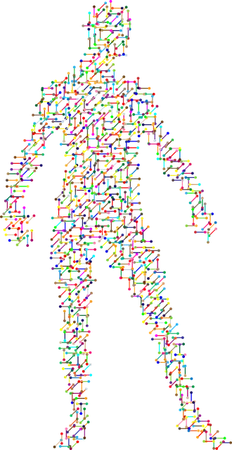
Which elements are they made of?
Big molecules from small units 2.8
Carbohydrates 2.8
- Made of carbon (carbo), hydrogen (hydr) and oxygen (ate).
- Used for respiration to release energy.
- We get most of ours as starch, from foods like potato, rice and pasta.
- Large carbohydrate molecules are insoluble, so they must be broken down by enzymes into simple sugars.
- Plants store carbohydrate as starch; animals store it as glycogen.
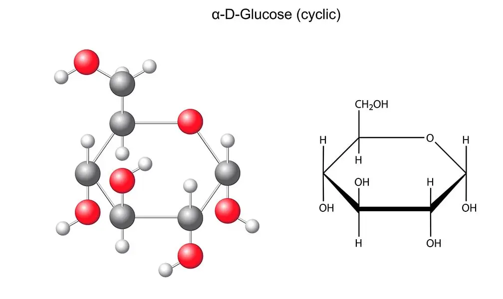
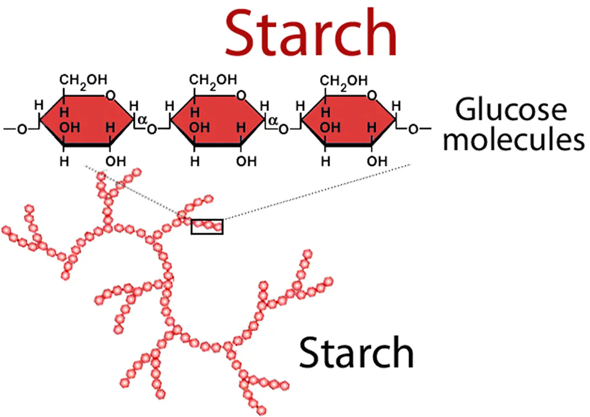

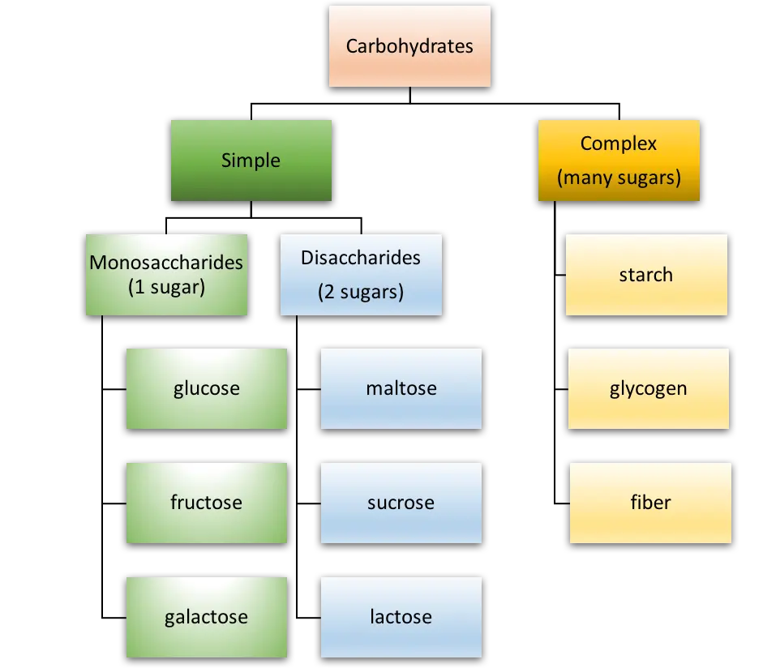
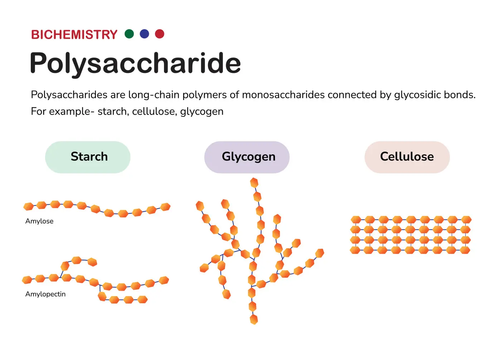
Carbohydrates in cells

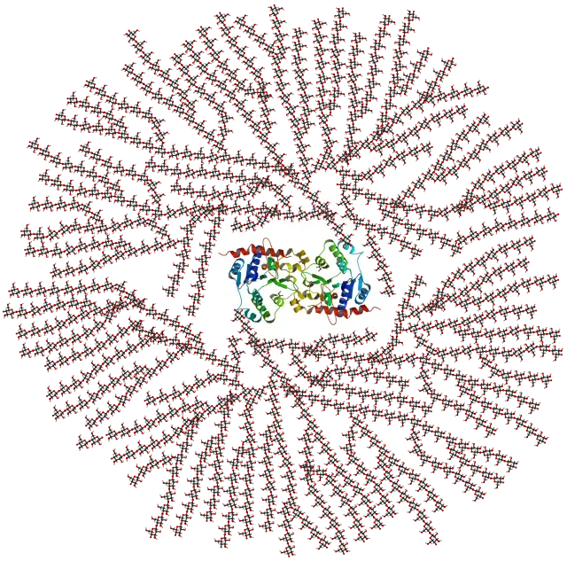
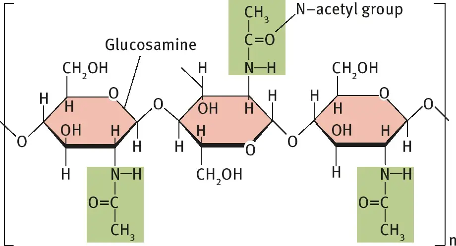
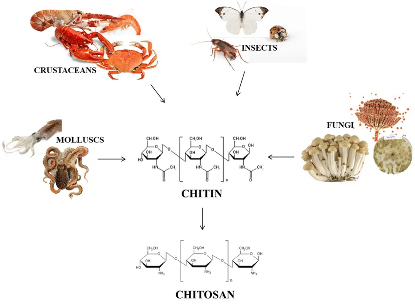

Lipids 2.8
- Also made of carbon, hydrogen and oxygen.
- Include fats, oils and fatty acids.
- Foods high in fat: from animals meat, butter, cheese, milk, eggs and oily fish; from plants olive oil, sunflower oil, rapeseed oil and margarine.
- Fat is used to make cell membranes, for insulation, to protect organs and as an energy store.
- Fats and oils are made of one glycerol joined to three fatty acids.
- Too much fat, especially saturated fat and cholesterol, can lead to heart disease.


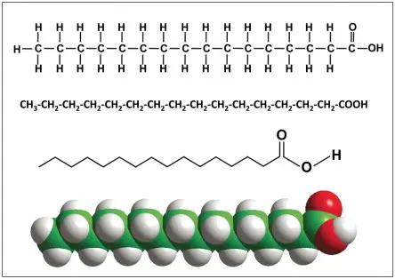

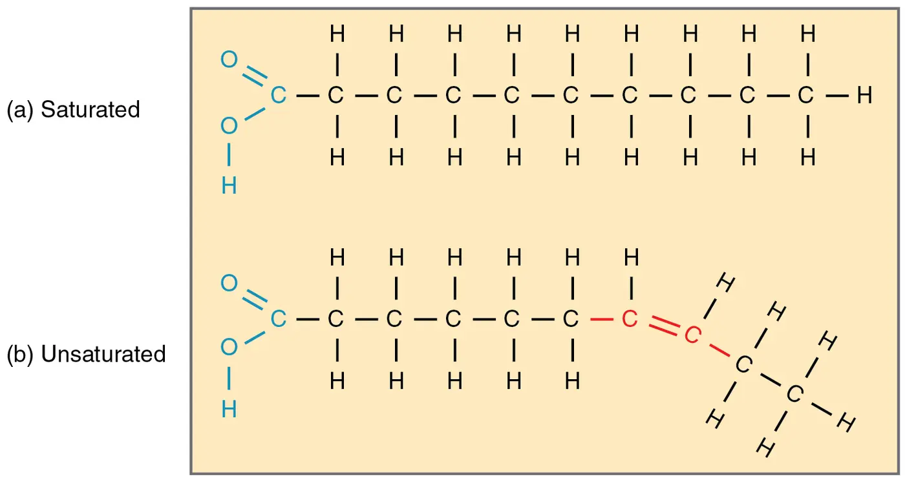

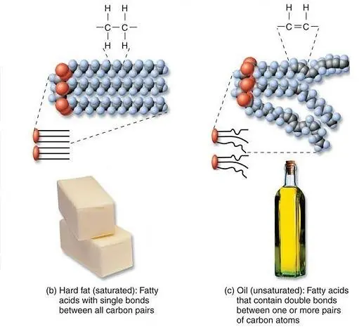

Proteins 2.8
- All cells contain protein. We need it for growth and repair of tissues.
- Animal foods high in protein: meat, fish, cheese and eggs. Plants generally contain less, but beans, peas and nuts have more than most.
- Proteins are large molecules made of amino acids. There are 20 different amino acids.
- The chains are folded and twisted so each protein has its own 3D shape.
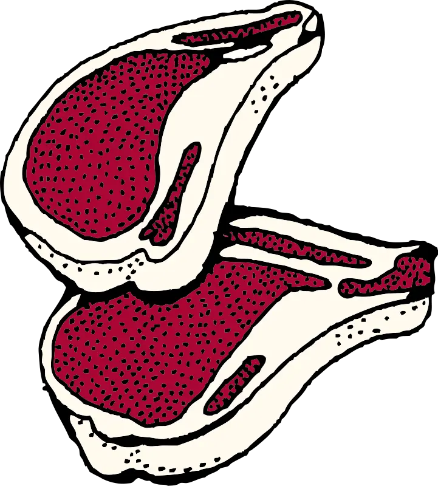


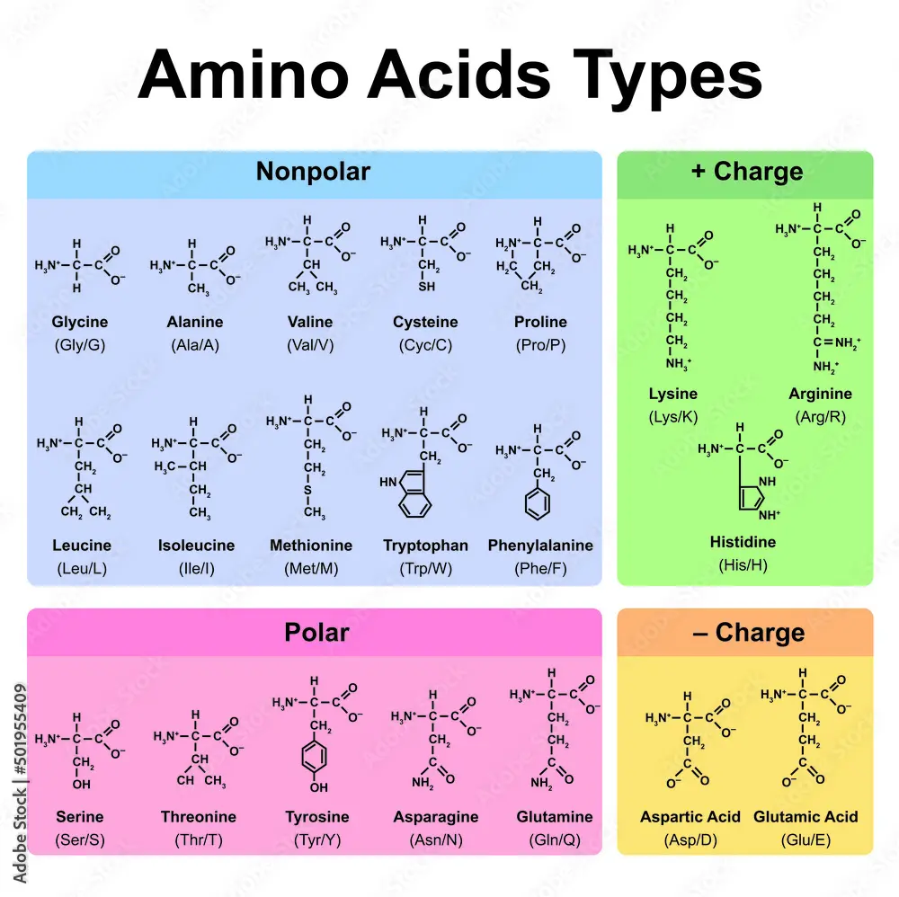


 InteractiveMolecular machinery: explore the proteins in a cellcdn.rcsb.org ↗
InteractiveMolecular machinery: explore the proteins in a cellcdn.rcsb.org ↗
Food tests 2.9 practical
VideoCognito: food testsyoutube.com ↗Starch: iodine
- Put a small sample of each food into a well of a spotting tile.
- Add a few drops of iodine solution.
- If the food turns blue-black, it contains starch.
Glucose: Benedict’s
- Put a sample of the food in a boiling tube.
- Add Benedict’s solution.
- Heat in a water bath at about 80 °C for 5 minutes.
- It changes from blue to green, orange and finally brick red, depending on how much glucose there is.
Protein: biuret
Add biuret solution to the food in a test tube. It starts blue and turns lilac/purple if protein is present.

Lipids: emulsion test
- Put the food in a test tube with a little ethanol.
- Shake it: any fat dissolves in the ethanol.
- Add an equal volume of water.
- A cloudy white emulsion means fat is present.
Summary
| Molecule | Test solution | Starts | Positive result |
|---|---|---|---|
| Starch | Iodine | yellow-brown | blue-black |
| Glucose | Benedict’s | blue | green → orange → brick red |
| Protein | Biuret | blue | purple / lilac |
| Lipid (fat) | Ethanol, then water | clear | cloudy white emulsion |
Enzymes 2.10
- Many chemical reactions in cells are controlled by enzymes.
- Enzymes are biological catalysts: they speed up metabolic reactions but are not used up.
- They are all proteins, coded for by genes.
- Our body temperature is 37 °C. Without enzymes, reactions at this temperature would be far too slow to keep us alive.
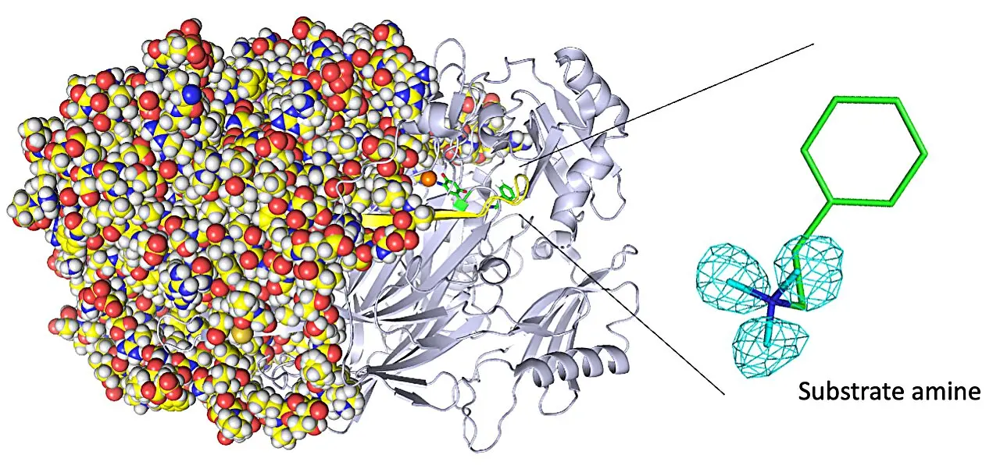

Lock and key
Each enzyme has an active site. The molecule it changes is the substrate. The substrate fits the active site like a key in a lock.
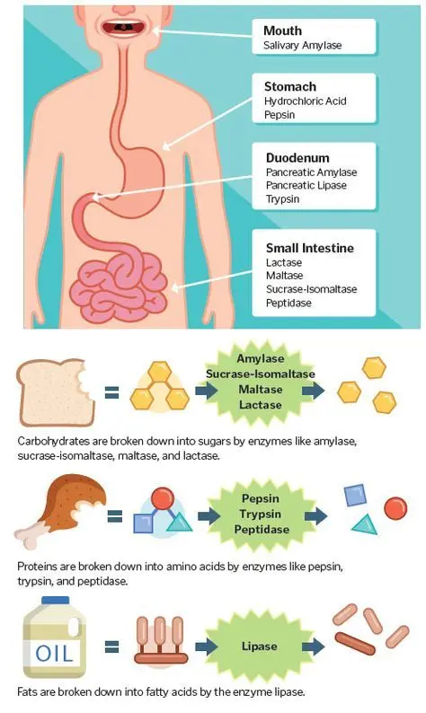
Temperature and pH 2.112.13
Temperature
- Heating gives molecules more kinetic energy, so they move faster and the enzyme works faster.
- Each enzyme has an optimum temperature at which it works best.
- Above this, the heat changes the shape of the active site. The enzyme is denatured and stops working.
pH
- The optimum pH for most enzymes is pH 7 (neutral), but pepsin in the stomach works best at pH 2.
- Away from the optimum, acid or alkali disrupts the bonds holding the active site in shape.
- The active site is denatured, so the substrate can no longer bind.
Practical: temperature and amylase 2.12 practical
Amylase is a digestive enzyme that breaks down starch into sugar. We can follow it with iodine: while starch is left, iodine turns blue-black.
- Warm the starch solution and the amylase separately in a water bath at the chosen temperature for 10 minutes.
- Mix them. Every 30 seconds, put a drop of the mixture onto iodine on a spotting tile.
- When the iodine stays yellow-brown, all the starch has gone: record the time.
- Repeat at five temperatures between 10 °C and 80 °C, keeping everything else the same.
- Control: use boiled (denatured) amylase. Repeat each temperature 3–5 times and take the mean.
- Plot temperature (x-axis) against time (y-axis).

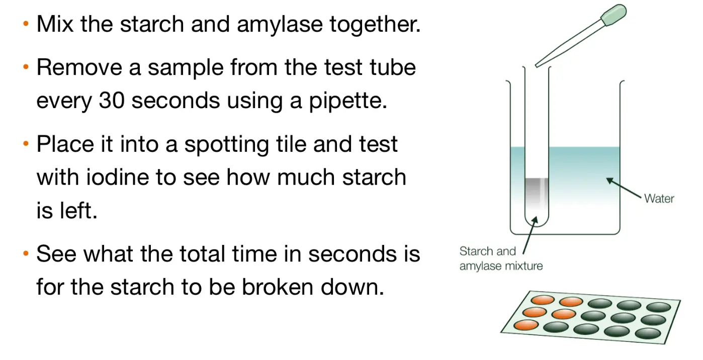